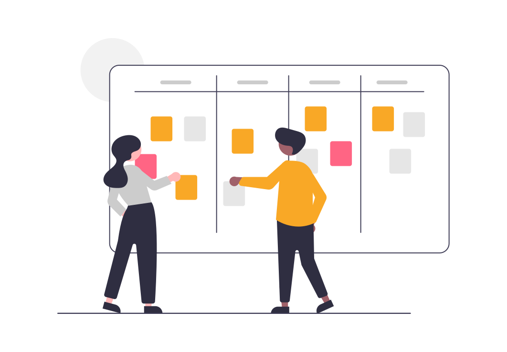
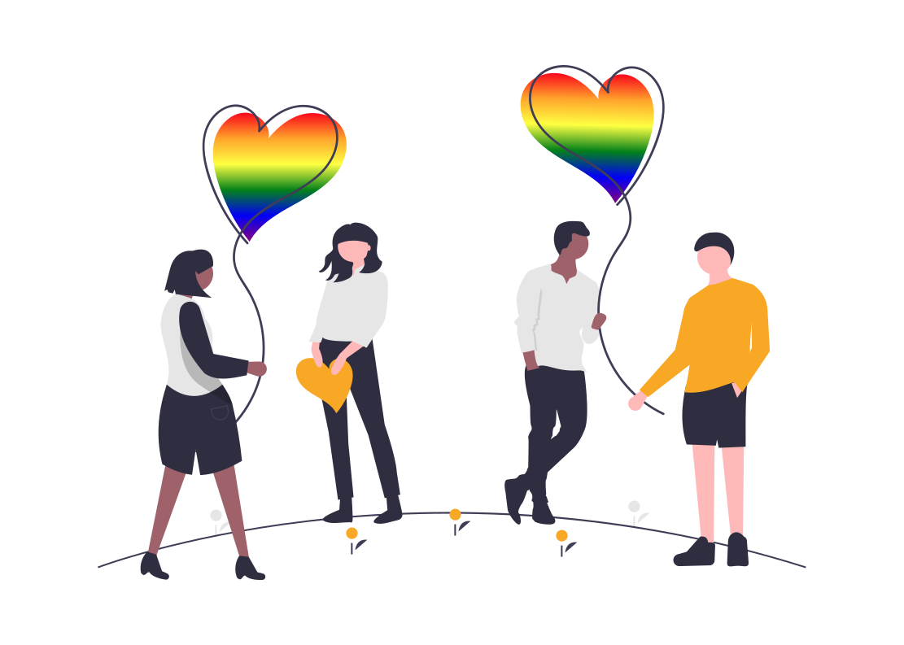
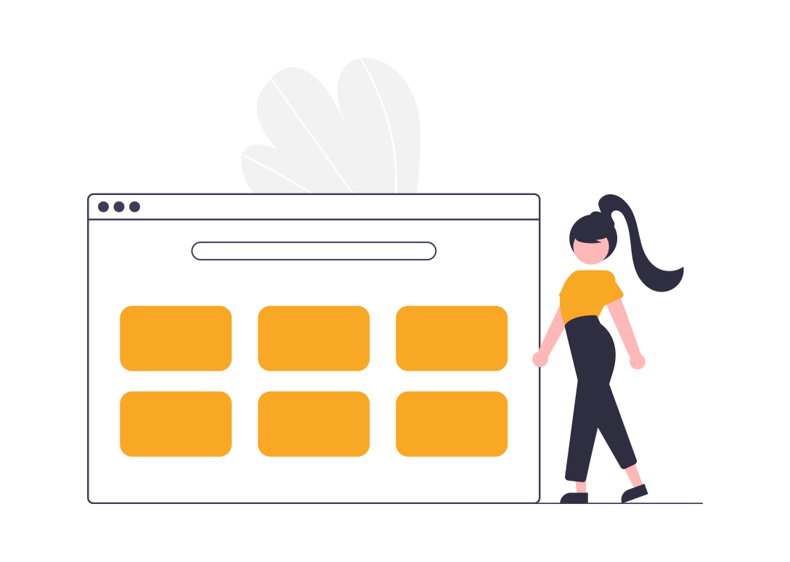

<!-- <ion-content *ngIf="!isLoading">
  <div class="header">
    <h2>毎日韓国語を学ぶ</h2>
  </div>

  <ion-card>        
    <ion-card-content style="font-size: 13px;">      
      私たちはあなたを愛しています、私たちは常に可能な限り最高の体験を提供するために一生懸命働いています ❤️  
      </ion-card-content>      
  </ion-card>

  <div class="ion-padding" scroll-y="false">
    <ion-slides [options]="slideOpts">
      <ion-slide>
        <div class="slide">
          <span class="label-new">新しい</span>
          
          <p class="text">Reading 1</p>
        </div>
      </ion-slide>

      <ion-slide>
        <div class="slide">
          <span class="label-new">新しい</span>
          
          <p class="text">Reading 2</p>
        </div>
      </ion-slide>

      <ion-slide>
        <div class="slide">
          
          <p class="text">Reading 3</p>
        </div>
      </ion-slide>

      <ion-slide>
        <div class="slide">
          
          <p class="text">Reading 4</p>
        </div>
      </ion-slide>
    </ion-slides>
  </div>

  <div class="ion-padding" scroll-y="false">
    <ion-slides [options]="slideOpts">
      <ion-slide>
        <div class="slide">
          
          <p class="text">listening 1</p>
        </div>
      </ion-slide>
    </ion-slides>
  </div>

  <div class="card-topic">
    <h3 style="font-size: 18px;">Topic for you</h3>
    <app-topic-card
      [routerLink]="['/learn-writing']" *ngFor="let topic of topics"
      [topic]="topic"
    ></app-topic-card>
  </div>

  <ion-refresher slot="fixed" (ionRefresh)="doRefresh($event)">
    <ion-refresher-content
      pullingIcon="chevron-down-circle-outline"
      refreshingSpinner="circles"
    >
    </ion-refresher-content>
  </ion-refresher>
</ion-content>

<ion-content *ngIf="isLoading">
  <app-skeleton></app-skeleton>
</ion-content> -->
<ion-header>
  <ion-toolbar color="primary">
    <ion-title> Recoginze Image </ion-title>
  </ion-toolbar>
</ion-header>

<ion-content class="ion-padding ion-text-center">
  <h5 *ngIf="fileImageWord">Cropped Image</h5>

  
  

  <ion-button class="ion-margin-top" (click)="selectImage()">
    Pick Image to Crop
  </ion-button>

  <ion-button class="ion-margin-top" (click)="recognizeImage()">
    Recognize Image
  </ion-button>
  <progress-bar
    [progress]="progress"
    *ngIf="!result"
    [color-degraded]="{'0': '#fd8c8e',  '15': '#f9c3d3', '25': '#00cbcb'}"
  ></progress-bar>
  <div
    style="margin-top: 30px; text-align: left"
    *ngIf="result"
    [innerHTML]="result"
  ></div>
  <div style="margin-top: 30px" *ngIf="!result">No text result.</div>
</ion-content>
